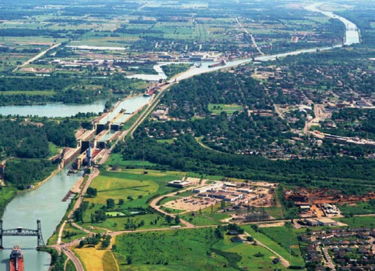

Saint Lawrence Seaway
The Locks
There are seven locks in the Saint Lawrence River portion of the seaway. From downstream to upstream they are:
- St. Lambert Lock—Saint Lambert, QC
- Côte Ste. Catherine Lock—Sainte-Catherine, QC
- Beauharnois Locks (two locks)—Melocheville, QC, at 45°18′12.6″N 73°55′36.5″W and 45°19′0.1″N 73°55′6.6″W
- Snell Lock—Massena, NY
- Eisenhower Lock—Massena, NY
- Iroquois Lock—Iroquois, ON, at 44°49′48″N 75°18′46.8″W

Water Level Elevations:
- Lake Ontario is 243 ft (74.1 m) above sea level.
- The drop through Iroquois Lock is 1 ft (0.3 m).
- Lake St. Lawrence is 242 ft (73.8 m) above sea level.
- The drop through Eisenhower Lock is 38 ft (11.6 m).
- The Wiley-Dondero Canal is 204 ft (62.2 m) above sea level.
- The drop through Snell Lock is 45 ft (13.7 m).
- Lake St. Francis is 159 ft (48.5 m) above sea level .
- The drop through Upper Beauharnois Lock is 41 ft (12.5 m).
- The Beauharnois Canal is 118 ft (36.0 m) above sea level.
- The drop through Lower Beauharnois Lock is 41 ft (12.5 m).
- Lake St. Louis is 77 ft (23.5 m) above sea level.
- The drop through Côte Ste. Catherine Lock is 30 ft (9.1 m)
- Laprairie Basin is 47 ft (14.3 m) above sea level.
- The drop through St. Lambert Lock is 15 ft (4.6 m).
- The drop through the Lachine Rapids is a few feet.
- Montreal Harbour is approximately 30 ft (9.1 m) above sea level.